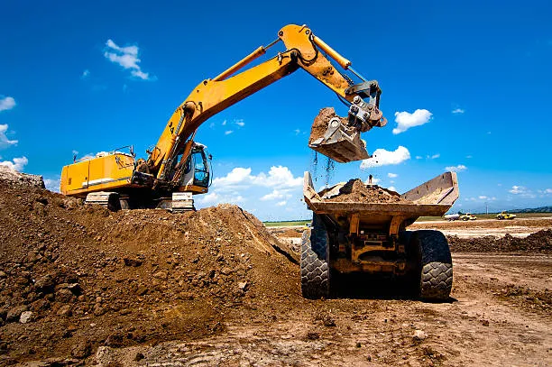

Our vision
To be a respected Angolan diamond mining company, recognised for operating responsibly and for contributing to the long-term development of the country's mining industry.

To be a respected Angolan diamond mining company, recognised for operating responsibly and for contributing to the long-term development of the country's mining industry.
To explore for, develop and extract diamond resources lawfully and safely, to manage their impact responsibly, and to deal fairly with the people and institutions we work with.
Integrity in how we conduct business. Respect for people and the environment. Discipline in how we plan and operate. Accountability for our decisions and results.
We approach mining as a technical and regulated activity. Decisions are based on geological and engineering evidence, carried out within the law, and reviewed against safety and environmental requirements.

Lulomine is rooted in Angola. We intend to contribute to the country's mining sector by operating within its laws, working with local institutions and developing local capability.
Management is responsible for ensuring that operations comply with applicable licences and legislation, that records are accurate and that safety and environmental obligations are met. Details of corporate structure and leadership will be published once approved for release.
Principles
We aim to run operations honestly and competently, with clear accountability for decisions, records and results.
We recognise that mining affects land, water, workers and communities, and we plan our activities to manage those effects.
We operate within Angola's legal and regulatory framework and keep the documentation that demonstrates it.
We take a long view of mining development, favouring sustained capability over short-term gain.